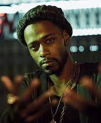

Darius Epps from Atlanta

Darius Epps is an eccentric character on the TV show "Atlanta," played by Lakeith Stanfield.
He adds humor and deep thoughts to the show with his unusual personality and philosophical ideas.
- Darius is the most at peace of any character in the show.
- He is incredibly authentic and true to himself, and is willing to correct his mistakes when he wrongs
someone.
- Darius is a pivotal character in how the show ends.